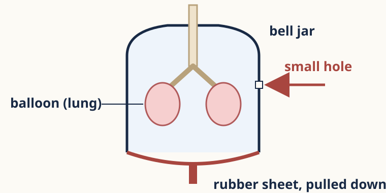

Depth cards
For when your core work is secure. Open to everyone; the frames are there if you want them.

Depth · Hole in the jar
This bell jar has a small hole in its wall. The rubber sheet is pulled down. Predict what happens to the balloon lung, and explain.
Frame: The jar’s volume ___, but air ___ through the hole, so the pressure around the balloon …
Depth · Less elastic lungs
Some lungs lose their stretchiness. Predict the effect on quiet breathing out. Explain with the chain.
Frame: Quiet breathing out needs muscles to relax and the lungs to ___. With less ___, volume …
Depth · Amount or factor?
“CO₂ changes the most.” Is this true? Decide, using two ways of measuring change.
Frame: By amount, ___ changes more because … By factor, ___ changes more because …
Depth · Why not 100%?
Someone adds the breathed-out column: 16 + 4 + 78 = 98, and says 2% of the air has disappeared. Why isn’t that valid?
Frame: The values are ___, and the table leaves out ___, so …
Local · Lifeguards
A lifeguard on a UAE beach gives rescue breaths to a swimmer who has stopped breathing. Breathed-out air has about 16% oxygen, not 21%. Is it still worth doing? Justify with the data, and state one limit.
Frame: It is / isn’t worth it because 16% is ___ of 21% … One limit is …
Write in your book. Your teacher will check it against the criteria.